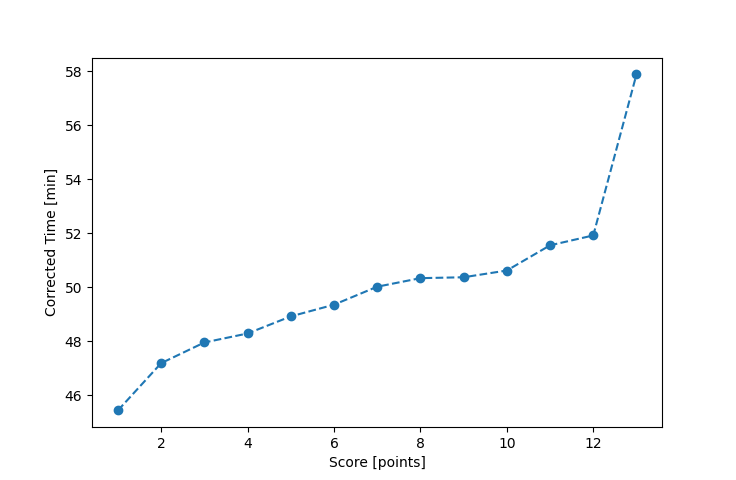

| Wind: | ? (BFT) |
|---|---|
| RC: | Art_MSara_M |
| Date: | June 25, 2017 |
| Notes: | M3 |
| Rank / Score | Name | Boat | Input Time [mm:ss] | Input Offset [mm:ss] | Race Time [mm:ss] | Race Time [s] | Handicap | Corrected Time [s] | Corrected Time [mm:ss] |
|---|---|---|---|---|---|---|---|---|---|
| 1.0 | Mike_F | SF | 46:48 | 00:00 | 46:48 | 2808 | 1.03000 | 2726 | 45:26 |
| 2.0 | Rod_H | LASEM | 46:54 | 00:00 | 46:54 | 2814 | 0.99400 | 2831 | 47:11 |
| 3.0 | John_T | US-1 | 43:27 | 00:00 | 43:27 | 2607 | 0.90600 | 2877 | 47:57 |
| 4.0 | Barry_O | HLR14 | 54:42 | 00:00 | 54:42 | 3282 | 1.13300 | 2897 | 48:17 |
| 5.0 | Ron_F | F5 | 47:59 | 00:00 | 47:59 | 2879 | 0.98100 | 2935 | 48:55 |
| 6.0 | Xavier | SWSX | 49:03 | 00:00 | 49:03 | 2943 | 0.99400 | 2961 | 49:21 |
| 7.0 | Mike_S | FSCT | 46:04 | 00:00 | 46:04 | 2764 | 0.92100 | 3001 | 50:01 |
| 8.0 | David_Bu | SF | 51:51 | 00:00 | 51:51 | 3111 | 1.03000 | 3020 | 50:20 |
| 9.0 | Bill_P | SF | 51:53 | 00:00 | 51:53 | 3113 | 1.03000 | 3022 | 50:22 |
| 10.0 | Lewis_V | BCN | 45:09 | 00:00 | 45:09 | 2709 | 0.89200 | 3037 | 50:37 |
| 11.0 | Chris_E | SF | 53:06 | 00:00 | 53:06 | 3186 | 1.03000 | 3093 | 51:33 |
| 12.0 | Nedra_F | SF | 53:28 | 00:00 | 53:28 | 3208 | 1.03000 | 3115 | 51:55 |
| 13.0 | Gail_B | SWSX | 57:32 | 00:00 | 57:32 | 3452 | 0.99400 | 3473 | 57:53 |

Application Notes:
All race results are unofficial
View source code at https://github.com/cessnao3/portsmouthracecalc/